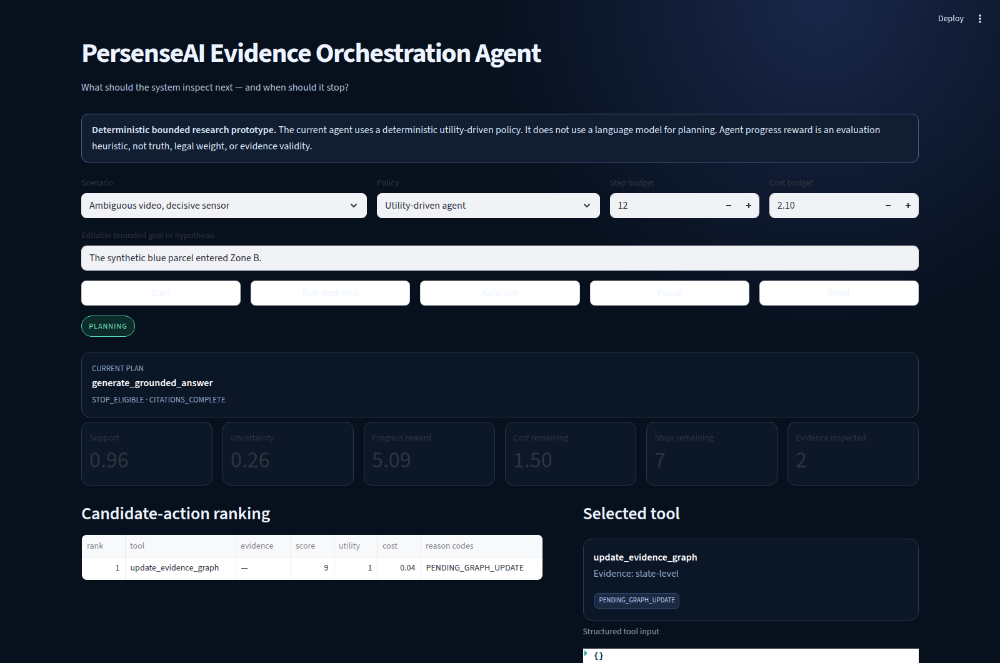
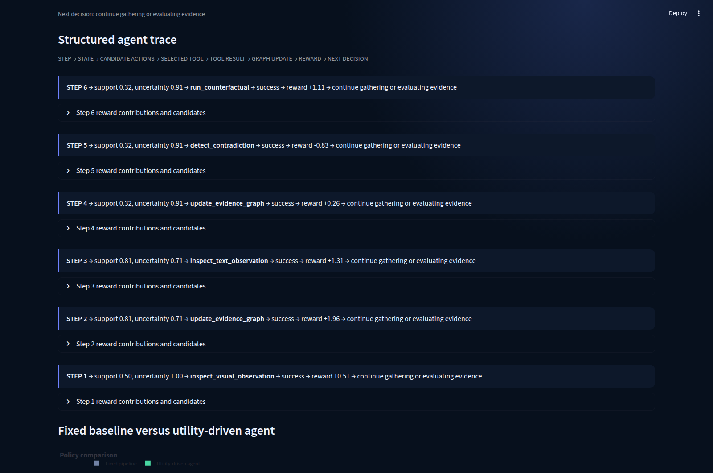
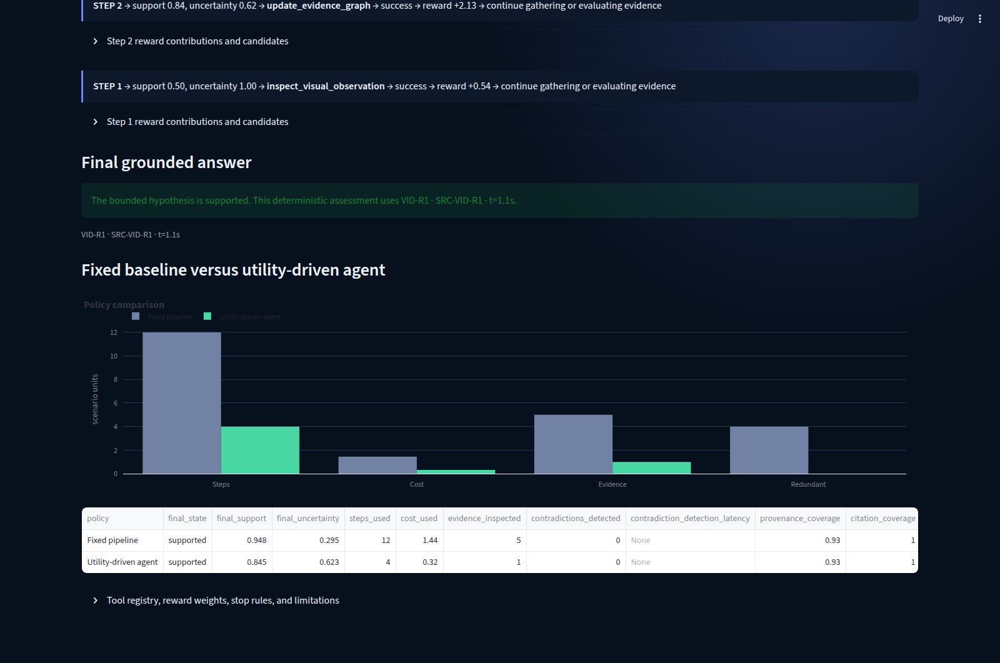
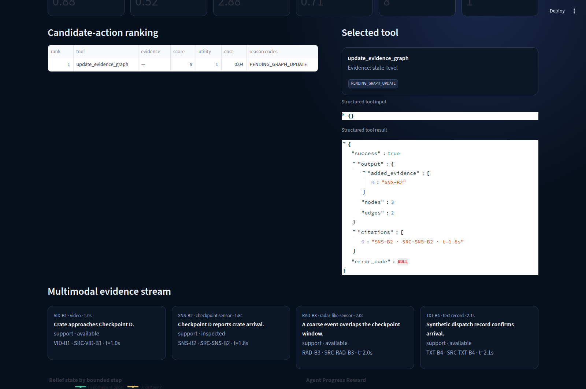
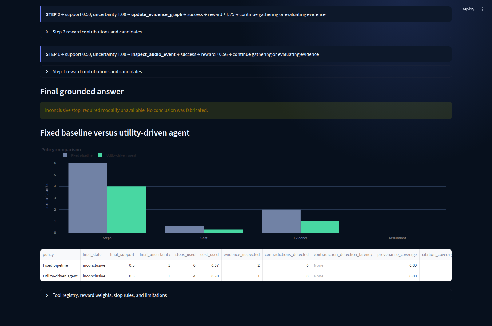

Project 04 · Bounded agentic reasoning
Evidence Orchestration Agent
What should the system inspect next — and when should it stop?

Inspect → update → decide
A closed, traceable evidence pipeline
Audio · Sensors
Provenance + time
Utility + uncertainty
evidence tool
or inconclusive
What makes it an agent?
It receives a bounded goal, observes structured state, generates and ranks valid actions, selects one registered tool, consumes a step and cost budget, updates memory and evidence state, calculates progress reward, and applies explicit continuation or stop rules. The trace shows structured decision evidence—not hidden chain-of-thought.
Registered tools
inspect_evidence_windowinspect_visual_observationinspect_text_observationinspect_audio_eventinspect_sensor_eventupdate_evidence_graphscore_evidence_utilitydetect_contradictionrun_counterfactualcompare_modalitiesrequest_next_modalitygenerate_grounded_answerstop_with_answerstop_inconclusive
There is no browsing, shell, external API, arbitrary code, or user-defined tool access.
Plan–act–observe loop
Candidate actions are scored from uncertainty reduction, evidence utility, contradiction value, provenance, novelty, redundancy, cost, latency, remaining budget, and answer completeness. Each step records candidates, selected tool, inputs, results, citations, state deltas, reward components, and stop checks.
Agent Progress Reward
Positive terms include information gain, grounded claims, provenance, contradiction resolution, corroboration, coverage, graph connectivity, and a cited stop. Penalties include redundancy, unsupported output, repetition, cost, latency, budget use, unresolved contradiction, premature stop, and tool failure.
Progress reward is an evaluation heuristic—not truth, legal weight, or evidence validity.
Fixed pipeline versus agent
The fixed baseline follows authored evidence order. The utility-driven policy can skip repeated frames, request a useful modality, select lower-cost sources, or test a contradiction. Results are scenario-specific: the contradiction case requires more agent steps than some simple cases and ends inconclusive rather than forcing an answer.
Boundaries and stop rules
The agent can act only through registered tools and is bounded by 14 steps, scenario cost, available evidence, structured memory, provenance checks, independent-source requirements, and explicit stop conditions. Missing evidence and unresolved conflict can end in an honest inconclusive state.
Public static agent demo
Inspect one bounded decision at a time.
Client-side sanitized JSON. No backend, external model, API, or analytics.
Deterministic bounded agent policy — no language model is used for planning in this public demo.
Candidate actions
| Tool | Evidence | Score | Utility | Cost |
|---|
Selected tool
Structured input and result
Inspectable agent trace
STEP → STATE → CANDIDATES → TOOL → RESULT → REWARD → NEXT DECISION
Final policy comparison
| Policy | State | Steps | Cost | Evidence | Redundant | Uncertainty | Stop reason |
|---|
All evidence and traces are synthetic. This prototype makes no forensic, operational, surveillance, production, or legal-validity claim.
Scenario gallery




Compare notes
Working on bounded agents, active evidence acquisition, contradiction handling, provenance, or abstention?
Share feedback